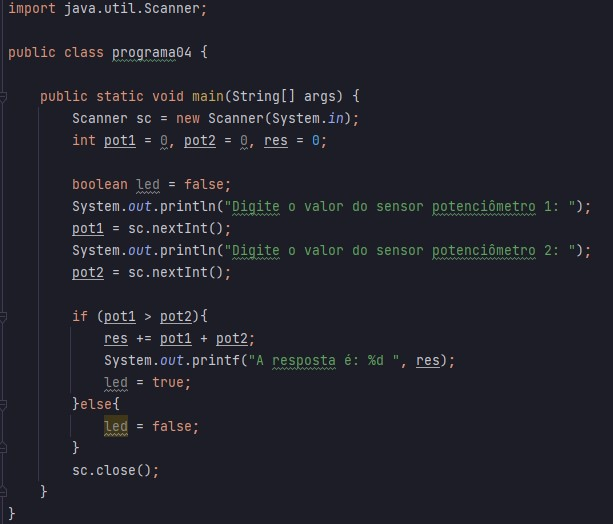

O que é o Java?
Java é uma linguagem de programação de propósito geral, orientada a objetos, que foi desenvolvida pela Sun Microsystems (hoje parte da Oracle) e lançada em 1995. Sua combinação de portabilidade, segurança e uma vasta coleção de bibliotecas faz dela uma escolha versátil para desenvolvedores em diversas áreas. Com uma comunidade ativa e um ecossistema rico, Java está bem posicionado para continuar a ser uma linguagem relevante e eficaz no futuro, tendo sua utilização em: Desenvolvimento de Aplicações Web, Jogos, etc...
Código em Java
Imagem
Texto
import java.util.Scanner;
public class programa04 {
public static void main(String[] args) {
Scanner sc = new Scanner(System.in);
int pot1 = 0, pot2 = 0, res = 0;
boolean led = false;
System.out.println("Digite o valor do sensor potenciômetro 1: ");
pot1 = sc.nextInt();
System.out.println("Digite o valor do sensor potenciômetro 2: ");
pot2 = sc.nextInt();
if (pot1 > pot2) {
res += pot1 + pot2;
System.out.printf("A resposta é: %d ", res);
led = true;
} else {
led = false;
}
sc.close();
}